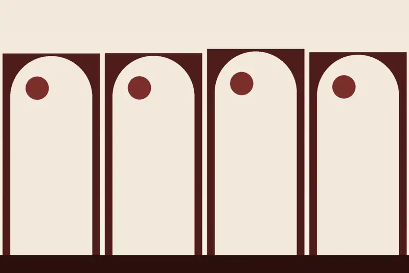
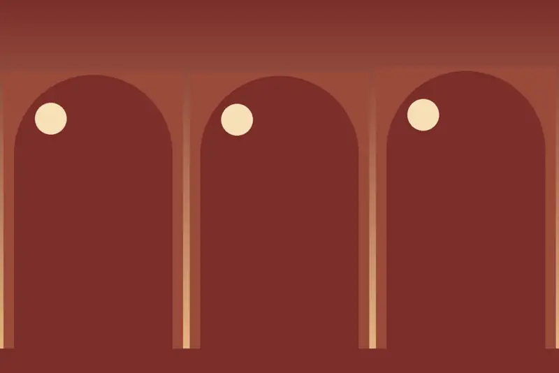

Individuales y dobles
Individual estándar y deluxe, doble estándar de 18 m² y doble deluxe de 18 m² con 2 camas individuales o 1 cama doble. Aire acondicionado, calefacción, TV de pantalla plana, escritorio y WiFi gratis.
Ver disponibilidad →
Una casa clásica del siglo XIX rehabilitada, a 5 minutos a pie de la catedral.
20 habitaciones elegantes y amplias, de decoración contemporánea, alrededor de un patio interior que deja pasar la luz natural.
El hotel alberga el restaurante Blu Vitola, con bodega propia, cocina local y cócteles. Cada día, desde las 07:00, cesta de desayuno en la habitación.
De la individual estándar a la triple ejecutiva, más un apartamento con parking. Las imágenes son ilustraciones y no muestran las habitaciones reales.
Individual estándar y deluxe, doble estándar de 18 m² y doble deluxe de 18 m² con 2 camas individuales o 1 cama doble. Aire acondicionado, calefacción, TV de pantalla plana, escritorio y WiFi gratis.
Ver disponibilidad →Doble y triple ejecutivas de 28 m² con balcón y sofá (la triple, con sofá cama). Y un apartamento de 100 m² junto al hotel, con salón cocina, una habitación, dos baños y parking incluido.
Ver disponibilidad →
Granada: la Alhambra, el Generalife, el barrio del Albaicín, el Sacromonte y el Paseo de los Tristes.
Calle Párraga, 7 · 18002 Granada, en el casco antiguo, a 5 minutos a pie de la catedral.
Calle Párraga, 7 · 18002 Granada